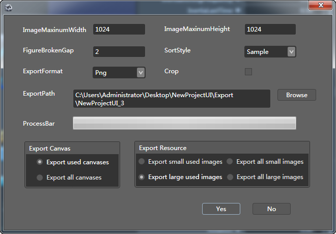

Export project
Export
-

Functions
ImageMaximumWidth
The maximum width of the synthetic image.
ImageMaxinumHeight
The maximum height of the synthetic image.
FigureBrokenGap
The gap pixels between small pictures that will synthesize the large picture.
SortStyle
Sample
Conforms to the specified width and height. The picture wraps from left to right horizontally until the maximum width has been reached.
Normal
Conforms to the specified width and height. The picture wraps from left to right horizontally until the maximum width has been reached. This process repeats until all picture resources that match the condition have been inserted.
Interliger
Conforms to specified width and height. The picture wraps from both left to right horizontally and up to down simultaneously. This process repeats until all picture resources are inserted from the upper-left part of the window to the bottom-right part of the window.
ExportPath
Sets the user-defined export path.
ExportFormat
Chooses the image format to export, either png or jpeg formats.
Crop
Crops the blank area of the picture, then synthesizes.
When the combined picture is larger than the setting size, the program will automatically split the combined picture into multiple pictures, and add the sequence to indices.
Export Canvas
Exports used canvases
Only exports the canvas that is being edited.
Export all canvases
exports all canvases that are in the project.
Export used images
Export small
1. Exports pictures used in projects. Unused pictures will not be exported.
2. Json and resources that are to be generated will be located in the export directory.
Export large
1. Exports pictures to be used in projects, and automatically generates an atlas collection.
2. Json and Plist files that are to be generated will be located in the export directory.
1. Do not change the resource level when importing the export resource to the project, which causes an error.
2. Custom font controls and number controls will not be exported as large pictures, and instead will be exported as small pictures.
Export all images
Export small
1. Exports all pictures located in the Resources directory.
2. Json and resources that are to be generated will be located in the export directory.
Export large
1. Exports all pictures located in the Resources directory, and automatically generates an atlas collection.
2. Json and Plist that are to be generated will be located in the export directory.
1. Do not change the resource level when importing the export resource to the project, otherwise an error may result.
2. Custom font controls and number controls will not be exported as large pictures, instead they will be exported as small pictures.